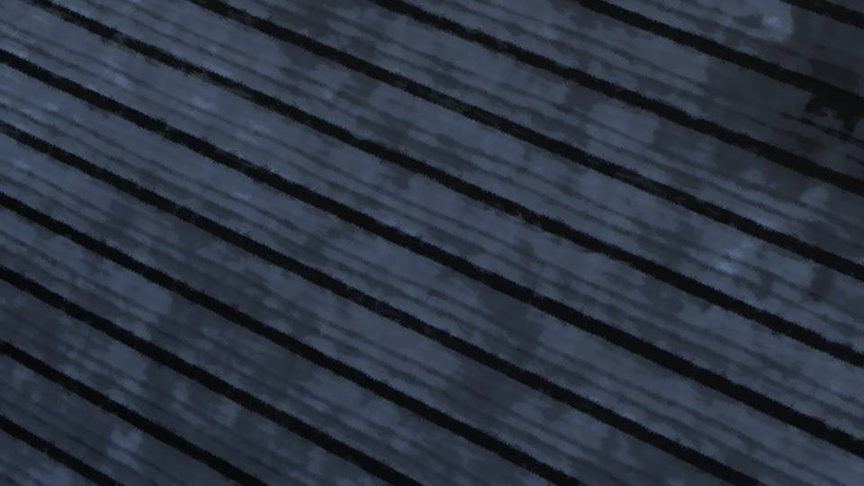
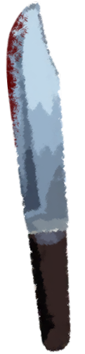

翠眼～沈黙～


「はあはあ……」

「くそ……！」
倒れていた2人が、よろよろと立ち上がる。
私はまだ、地面に這ったまま。
倒れていた2人が、よろよろと立ち上がる。
私はまだ、地面に這ったまま。
「茅萱……よくもやってくれたわね……」
「姪っ子だから少しは優しくしてあげたんだけどなあ……。 ちょっと調子に乗り過ぎだね」
「悪い娘には、お仕置きが必要ね。楽に死ねると思わないでよ？」
叔父さんが私のナイフを拾い上げる。
「姪っ子だから少しは優しくしてあげたんだけどなあ……。 ちょっと調子に乗り過ぎだね」
「悪い娘には、お仕置きが必要ね。楽に死ねると思わないでよ？」
叔父さんが私のナイフを拾い上げる。

再び、私の手足に菌糸がまとわりつき、ギリギリと縛り上げる。
立つことも倒れることも、死月妖花の意のまま―― 私はまな板の上の鯉に過ぎない。
立つことも倒れることも、死月妖花の意のまま―― 私はまな板の上の鯉に過ぎない。

「まずは、その身体の中の血を、死ぬギリギリまで抜いてあげようか」
「栄一郎、殺しちゃダメよ？」
「分かってるって」
ダメだ……！ 避けることも、防ぐこともできない……！
これまで、か……！
「栄一郎、殺しちゃダメよ？」
「分かってるって」
ダメだ……！ 避けることも、防ぐこともできない……！
これまで、か……！

――と、ここで私の目が覚めたのだった。
「はあ……はあ……」
額に汗が浮かんでいる。
お母さんと叔父さんが、私を殺す夢。
先ほど目の当たりにした現実も、それと大して変わりなかったが……。
額に汗が浮かんでいる。
お母さんと叔父さんが、私を殺す夢。
先ほど目の当たりにした現実も、それと大して変わりなかったが……。
ここは……どこだろうか。
臭いも―― 景色も―― 音も――。
ここがどこなのか分かる情報がない。
臭いも―― 景色も―― 音も――。
ここがどこなのか分かる情報がない。
風の音が聞こえるから、少なくともあのトンネルではないだろう。
重力の向きと、私の視界に入るものを総合して考えると、目の前にあるのは…… 天井……？
どこかの建物のようだ。
重力の向きと、私の視界に入るものを総合して考えると、目の前にあるのは…… 天井……？
どこかの建物のようだ。
私はどうしてここにいるのか。
あの時のことを思い返してみる。
あの時のことを思い返してみる。
手足を縛られたままナイフを振り回すと、手から抜けてしまい、腕をカミソリのように切ってしまったのだ。
すると2人が苦しみだし、手足の菌糸もほどけ、私には逃げる機会が与えられた。
すると2人が苦しみだし、手足の菌糸もほどけ、私には逃げる機会が与えられた。
そうだ、無我夢中でトンネルの出口に向かい、外へ出ると同時に人のいない方へ、人が来ない方へと向かったのだ。
そしてこの、どことも分からぬこの場所にたどり着き――
そしてこの、どことも分からぬこの場所にたどり着き――
疲れ果てた私は、今まで眠っていた。
腕の切り傷を見てみると、まだ完全に乾ききっていない。
まだ逃げ出してから数時間程度、今は21時くらいだろうか。
腕の切り傷を見てみると、まだ完全に乾ききっていない。
まだ逃げ出してから数時間程度、今は21時くらいだろうか。
どうしてあの時、2人が突然もがき、菌糸がほどけたのかは分からない。
何か、死月妖花の弱点をつく現象が発生したのだろうか。
さっき見た蔵書に、死月妖花を撃退する方法があったのは覚えている。
確か……そうだ、思い出した。翠眼をいけにえにして撃退したのだった。
何か、死月妖花の弱点をつく現象が発生したのだろうか。
さっき見た蔵書に、死月妖花を撃退する方法があったのは覚えている。
確か……そうだ、思い出した。翠眼をいけにえにして撃退したのだった。
翠眼、つまり私の命を使わなければ死月妖花を倒すことができない。
私が切り傷を負ったとたんに、あの2人は苦しみだした。
ということは……つまり……。
私が切り傷を負ったとたんに、あの2人は苦しみだした。
ということは……つまり……。
私の苦しみが死月妖花にも伝わっている。
その理屈なら、私が死ねば死月妖花も死ぬということなのだろうか。
だとしたら、私が死ぬことで、みんなが死月妖花の手から逃れることができる。
その理屈なら、私が死ねば死月妖花も死ぬということなのだろうか。
だとしたら、私が死ぬことで、みんなが死月妖花の手から逃れることができる。
なんてこと……。呪殺事件を解決する方法って、私が死ぬことだったんだ。
それがなされなかったがために、今までたくさんの人が死んだ。
だったら、私は今ここで……。
それがなされなかったがために、今までたくさんの人が死んだ。
だったら、私は今ここで……。

私の手にはナイフ。まだ血がうっすらとついている。
これを私の首に突き立てれば、すべてが終わる。
これを私の首に突き立てれば、すべてが終わる。
もしこのナイフを首に突き立てたらどうなるのだろうか。
普通なら絶命するだろうが、果たしてそれだけで済むのだろうか。
何かの間違いで、歩き回る死体になりはしないだろうか。
あるいは、桜の苗床に――。
普通なら絶命するだろうが、果たしてそれだけで済むのだろうか。
何かの間違いで、歩き回る死体になりはしないだろうか。
あるいは、桜の苗床に――。
なぜ私なのだろうか。
なぜ私がこのような運命に……。
………… なぜ……？
なぜだろう。
なぜなのか、私には分からない。
なぜ私がこのような運命に……。
………… なぜ……？
なぜだろう。
なぜなのか、私には分からない。

「チガ姉が見たこと、聞いたこと、行き着いたこと――それらをすべて疑ってください」
ふっと五島ちゃんの言葉が頭をよぎる。
なぜを繰り返す……。すべてを疑う……。
なぜを繰り返す……。すべてを疑う……。
そうだ、まだ決めつけてはダメだ。
今存在する翠眼は、私と夏菜。
だから私だけが死ねば済むとは限らない。
もしかしたら、夏菜の命も犠牲にしなければならないのだろうか。
今存在する翠眼は、私と夏菜。
だから私だけが死ねば済むとは限らない。
もしかしたら、夏菜の命も犠牲にしなければならないのだろうか。
それに、手を切った瞬間にあの2人は苦しんだのだ。
私の痛みが伝わったというのであれば、蔵で叔父さんに殴られた方がよほどダメージが大きかった。
ちょっとつじつまが合わないな。
もうこの時点で『なぜ』の掘り下げは、固い地盤に当たってしまったようだ。
私の痛みが伝わったというのであれば、蔵で叔父さんに殴られた方がよほどダメージが大きかった。
ちょっとつじつまが合わないな。
もうこの時点で『なぜ』の掘り下げは、固い地盤に当たってしまったようだ。
そもそも、私の命が死月妖花の命とつながっているなんて、意味が分からない。
暫定的な私の推測では、私が死んだところで死月妖花を倒すことはできない。
その考えに行き着き、大きくため息をつく。
でも少なくとも、死月妖花に何らかの打撃を与えることができたのだろう。
暫定的な私の推測では、私が死んだところで死月妖花を倒すことはできない。
その考えに行き着き、大きくため息をつく。
でも少なくとも、死月妖花に何らかの打撃を与えることができたのだろう。
しかし、たったあれだけで死月妖花が消滅しただなんて、都合の良すぎる発想だ。
一時的にひるんだだけと思っていた方がいい。
死月妖花はまた、私を連れ去ろうとするはずだ。
ならば、私が次にすべきことは死ぬことではない。
ひたすら五感を封じることだ。
一時的にひるんだだけと思っていた方がいい。
死月妖花はまた、私を連れ去ろうとするはずだ。
ならば、私が次にすべきことは死ぬことではない。
ひたすら五感を封じることだ。
さっきの出来事が夢だったらよかったのに。
でも、この腕の傷が、夢でなかったことを証明する。
私はもう、見ることも聞くことも、嗅ぐことも許されない。
お母さんや叔父さんが私を盗感し、この場所のヒントになる情報を与えてしまったら、また私の前に現れるだろう。
いや、それ以前に私がここへ駆けこむところを盗感されていたのならお手上げではあるが。
でも、この腕の傷が、夢でなかったことを証明する。
私はもう、見ることも聞くことも、嗅ぐことも許されない。
お母さんや叔父さんが私を盗感し、この場所のヒントになる情報を与えてしまったら、また私の前に現れるだろう。
いや、それ以前に私がここへ駆けこむところを盗感されていたのならお手上げではあるが。
目を閉じる。
動いている死体は、2人だけなのだろうか。
もしかしたら、今まで土葬された全ての人間が動いているのかもしれない。
数百人、数千人といるのかもしれない。
動いている死体は、2人だけなのだろうか。
もしかしたら、今まで土葬された全ての人間が動いているのかもしれない。
数百人、数千人といるのかもしれない。
いや、その中の多くは――少なくとも2代前の大魔女以前に死んだ人はほとんどが桜の木になったはず。
それでも動く可能性のある死体は、数十人は下らないだろう。
それでも動く可能性のある死体は、数十人は下らないだろう。
だとすれば、動く死体として現れる可能性があるのは、セレジェイラ聖教に桜を持ち去られてから土葬された人、ということになる。
ここ70年間で死んだ人は……ざっと、30人はいるだろうか。
これほどの不死身の軍勢を相手に、私たち人間が立ち向かうなど、焼け石に水だ。
私が全力をもってあの2人に立ち向かおうとしても、手も足も出なかったのだ。
ここ70年間で死んだ人は……ざっと、30人はいるだろうか。
これほどの不死身の軍勢を相手に、私たち人間が立ち向かうなど、焼け石に水だ。
私が全力をもってあの2人に立ち向かおうとしても、手も足も出なかったのだ。
今、この集落で予知能力を持っているのは、私だけ。
だから、私が盗感されなければ、死月妖花も情報を得られないはずだ。
問題は、
だから、私が盗感されなければ、死月妖花も情報を得られないはずだ。
問題は、

なつみちゃんだ。
彼女にも予知能力があるから、盗感の対象となる。
私がなつみちゃんの来訪を止めようとすれば、また邪魔が入るに違いない。
彼女にも予知能力があるから、盗感の対象となる。
私がなつみちゃんの来訪を止めようとすれば、また邪魔が入るに違いない。
しかし、新村本家の桜があっても危険予知ができないのはちょっと引っかかる。
危険予知ができなければ盗感もできないはず。
なるほど、新村本家の桜の木が枯れていたように見えたのは、死月妖花が敢えてそうしていたのか。
必要に応じて新村本家の桜の木を活性化させて動かしているのだ。
危険予知ができなければ盗感もできないはず。
なるほど、新村本家の桜の木が枯れていたように見えたのは、死月妖花が敢えてそうしていたのか。
必要に応じて新村本家の桜の木を活性化させて動かしているのだ。
この最悪な状況を打開するためには、考えるしかない。
仮にそれを考え付き、行動に移せるようになったとしても、絶対に私自身が自分の居場所を知ってはいけない。
タイムリミットは、元木町組がここに来る予定である明日の19時までだ。
仮にそれを考え付き、行動に移せるようになったとしても、絶対に私自身が自分の居場所を知ってはいけない。
タイムリミットは、元木町組がここに来る予定である明日の19時までだ。

まずは、私自身を孤立させる。
明日の朝には、集落の人たちが私の捜索を始めるだろう。
もしみんなに見つかってしまえば、私の視覚聴覚を通し、あの2人に居場所が分かってしまう。
捜索隊にだって、もしかしたら死月妖花に操られた死体が紛れ込むかもしれない。
今生きている人間を真似て私に接近してくるかもしれない。
明日の朝には、集落の人たちが私の捜索を始めるだろう。
もしみんなに見つかってしまえば、私の視覚聴覚を通し、あの2人に居場所が分かってしまう。
捜索隊にだって、もしかしたら死月妖花に操られた死体が紛れ込むかもしれない。
今生きている人間を真似て私に接近してくるかもしれない。
だから、相手が誰であろうが、今は見つからないように身を潜めるしかない。
この建物の中に隠れられる場所はないだろうか。
この建物の中に隠れられる場所はないだろうか。
寝転がり目を閉じたまま、手足を動かして周囲の様子を探る。
ここの床は、木でできているようだ。
しかも、所々湿っていて、まるで廃屋のような――。
古い小屋……？
まさか、ここは豊岳方面に向かう山道にある、旧休憩所だろうか。
思わず目を開く。
ここの床は、木でできているようだ。
しかも、所々湿っていて、まるで廃屋のような――。
古い小屋……？
まさか、ここは豊岳方面に向かう山道にある、旧休憩所だろうか。
思わず目を開く。

間違いない、ここは休憩所だった廃屋だ。

狩りの休憩のために建てられたものだが、バギーを導入してからほとんど使われなくなった。
思い返せば、無意識のうちに人のいない建物へ逃げ込んだ気もする。
思い返せば、無意識のうちに人のいない建物へ逃げ込んだ気もする。
しかし、同時に凄まじい不安感に襲われる。
今私が廃屋と認識したということは、死月妖花にも私の居場所が分かった可能性がある。
あくまで、可能性だ。
思考までは盗感できないから、私が気づいたからと言って死月妖花もここが廃屋と分かったとは限らない。
今私が廃屋と認識したということは、死月妖花にも私の居場所が分かった可能性がある。
あくまで、可能性だ。
思考までは盗感できないから、私が気づいたからと言って死月妖花もここが廃屋と分かったとは限らない。
ここまで来たら、死月妖花はこの場所を認識できていない方に賭けるしかない。
でなければ、今私がどんな行動をしようと、捕まるだけだ。
でなければ、今私がどんな行動をしようと、捕まるだけだ。
いや、死月妖花が私の居場所を特定できたかを判別する方法がある。
死月妖花は死体を動かす時、どうやらターゲットの近くに穴を作るようだ。
そしてそこから死体を出入りさせている。
死月妖花は死体を動かす時、どうやらターゲットの近くに穴を作るようだ。
そしてそこから死体を出入りさせている。
代わりに穴ができると、あの怪音――猛き音が鳴る。
つまり、あの音が鳴らなければ安全と言うわけだ。
つまり、あの音が鳴らなければ安全と言うわけだ。
隅に置かれたテーブルの下に身を潜め、目を閉じる。
ここが唯一、廃屋内で身を潜めることができる場所だ。
ここが唯一、廃屋内で身を潜めることができる場所だ。
と、急に眠気が襲ってきた。
さっきまで気を失っていたようだが、安らげる夢見ではなかった。
今のうちに眠っておこうか……。
元木町組が来るまでに対策を練らなくてはならないけど、今思いつく手段は何もない。
さっきまで気を失っていたようだが、安らげる夢見ではなかった。
今のうちに眠っておこうか……。
元木町組が来るまでに対策を練らなくてはならないけど、今思いつく手段は何もない。
秘密基地の地下に行ってファルシフィカソを投与すれば、盗感されることもないだろうが、着くのは至難の業。
その間に私の位置を特定され、先回りされてしまうかもしれない。
秘密基地は、ここへの通り道にあったのに、何とも無駄なことをしてしまった。
その間に私の位置を特定され、先回りされてしまうかもしれない。
秘密基地は、ここへの通り道にあったのに、何とも無駄なことをしてしまった。
そんなことを考えるも、自然とまぶたが重くなっていく。
特に空腹も感じないし、このまま朝まで眠り続けることもできるだろう。
やっぱり、ここで野宿は冷えるはず。
暖房のない蔵での作業のためにポンチョブラケットは着ていたが、凍死はしなくても、風邪を引くのはいやだな。
もし私が凍死しそうになったら、死月妖花は気づくのだろうか。
特に空腹も感じないし、このまま朝まで眠り続けることもできるだろう。
やっぱり、ここで野宿は冷えるはず。
暖房のない蔵での作業のためにポンチョブラケットは着ていたが、凍死はしなくても、風邪を引くのはいやだな。
もし私が凍死しそうになったら、死月妖花は気づくのだろうか。
あの2人は、私を女神さまに会わせると言っていた。
殺すことが目的でないのなら、最悪でも、私は死なずに済むってこと……？
でも、その後どんなことに利用されるのか……。
それこそ、死んだ方がマシだろうな……。
殺すことが目的でないのなら、最悪でも、私は死なずに済むってこと……？
でも、その後どんなことに利用されるのか……。
それこそ、死んだ方がマシだろうな……。
ダンゴムシのように丸まり、少しでも暖を逃さぬよう縮こまる。
早く、眠ってしまおう……。
私が現実世界を知覚することだけでも、リスクなのだから。
早く、眠ってしまおう……。
私が現実世界を知覚することだけでも、リスクなのだから。
Read ✓ Next in this arc →